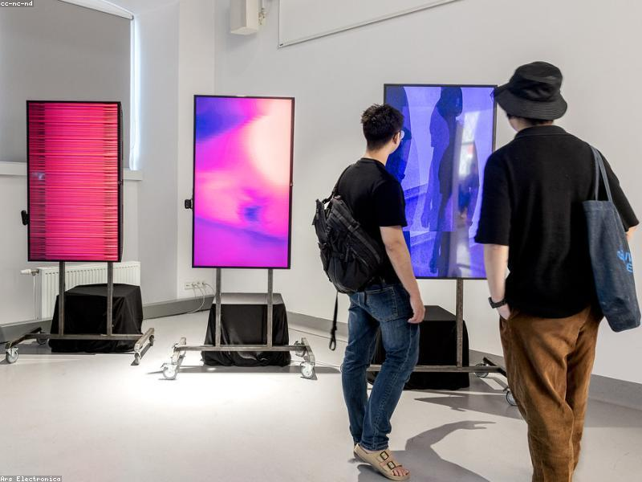

Các trường đại học, cao đẳng Tây Nam Bộ chia sẻ giải pháp thúc đẩy chuyển đổi số trong bối cảnh mới
16/12/2025 08:40
GDVN
Tại hội thảo, nhiều mô hình và kinh nghiệm thực tiễn đã được chia sẻ, góp phần định hình con đường phát triển bền vững cho giáo dục đại học trong giai đoạn mới.